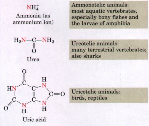
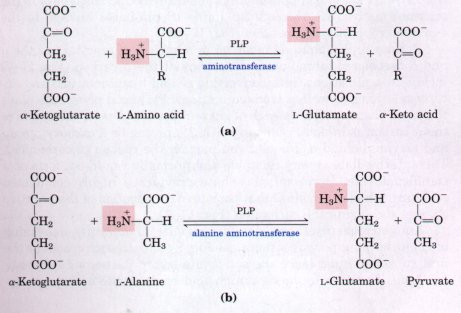
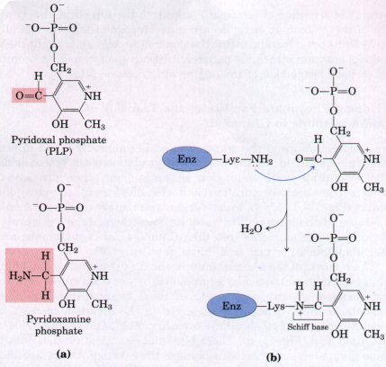
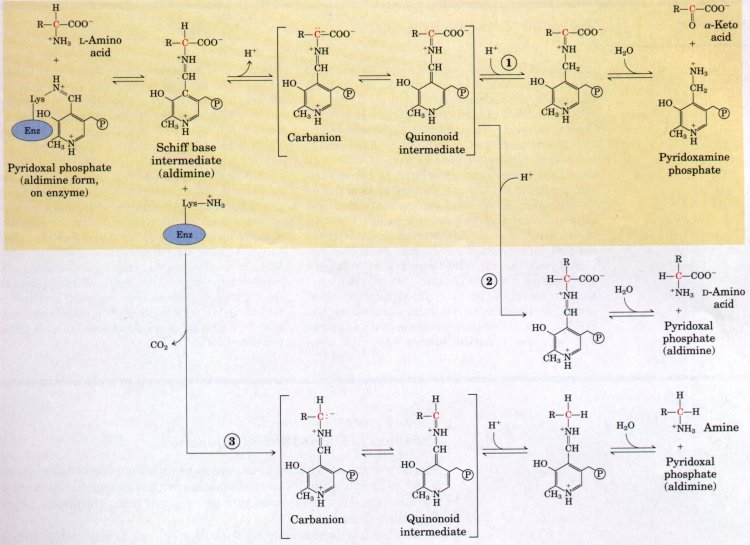
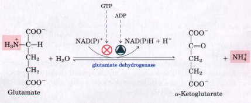
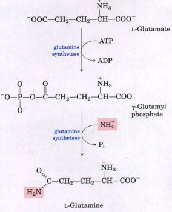
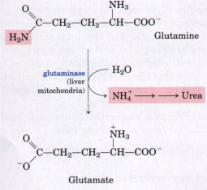
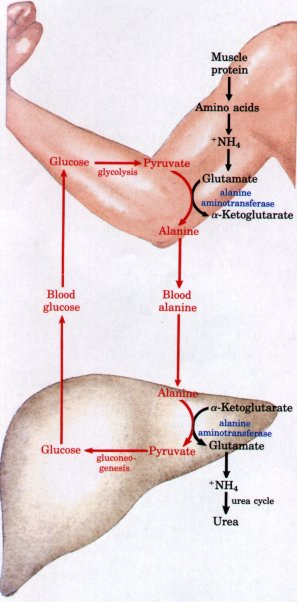
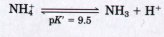

The α-amino groups of the 20 L-amino acids commonly found in proteins are removed during the oxidative degradation of the amino acids. If not reused for synthesis of new amino acids or other nitrogenous products, these amino groups are channeled into a single excretory end product (Fig. 17-4). Many aquatic organisms simply release ammonia as NH4+ into the surrounding medium. Most terrestrial vertebrates first convert the ammonia into urea (humans, other mammals, and adult amphibians) or uric acid (birds, reptiles).
| The removal of the α-amino groups, the
first step in the catabolism of most of the L-amino
acids, is promoted by enzymes called aminotransferases
or transaminases. In these transamination
reactions, the α-amino group is transferred to the
α-carbon atom of α-ketoglutarate, leaving behind the
corresponding α-keto acid analog of the amino acid (Fig.
17-5). There is no net deamination (i.e., loss of amino
groups) in such reactions because the α-ketoglutarate
becomes aminated as the α-amino acid is deaminated. The
effect of transamination reactions is to collect the
amino groups from many different amino acids in the form
of only one, namely, L-glutamate. The glutamate channels
amino groups either into biosynthetic pathways or into a
final sequence of reactions by which nitrogenous waste
products are formed and then excreted. Cells contain several different aminotransferases, many specific for a-ketoglutarate as the amino group acceptor. The aminotransferases differ in their specificity for the other substrate, the L-amino acid that donates the amino group, and are named for the amino group donor (Fig. 17-5b). The reactions catalyzed by the aminotransferases are freely reversible, having an equilibrium constant of about 1.0 (ΔG°' = 0 kJ/mol). |
 Figure 17-4 Excretory forms of amino group nitrogen in different forms of life. Notice that the carbon atoms of urea and uric acid are at a high oxidation state; the organism discards carbon only after having obtained most of its available energy of oxidation. |
 |
Figure 17-5 (a) The aminotransferase reaction (transamination). In many aminotransferase reactions, α-ketoglutarate is the amino group acceptor. All aminotransferases have pyridoxal phosphate (PLP) as cofactor. (b) The reaction of alanine aminotransferase is shown as an example. |
 |
Figure 17-6 The prosthetic group of aminotransferases. (a) Pyridoxal phosphate (PLP) and its aminated form pyridoxamine phosphate are the tightly bound coenzymes of aminotransferases. The functional groups involved in their action are shaded in red. Pyridoxal phosphate is bound to the enzyme both through strong noncovalent interactions and through formation of a Schiff base linkage involving a Lys residue at the active site (b). |
All aminotransferases share a common prosthetic group and a common reaction mechanism. The prosthetic group is pyridoxal phosphate (PLP), the coenzyme form of pyridoxine or vitamin B6. Pyridoxal phosphate was briefly introduced in Chapter 14 (p. 422) as a cofactor in the glycogen phosphorylase reaction. Its role in that reaction, however, is not representative of its normal coenzyme function. Its more typical functions occur in the metabolism of molecules with amino groups.
Pyridoxal phosphate functions as an intermediate carrier of amino groups at the active site of arninotransferases. It undergoes reversible transformations between its aldehyde form, pyridoxal phosphate, which can accept an amino group, and its aminated form, pyridoxamine phosphate, which can donate its amino group to an α-keto acid (Fig. 17-6a). Pyridoxal phosphate is generally bound covalently to the enzyme's active site through an imine (Schiff base) linkage to the ε-amino group of a Lys residue (Fig. 17-6b).
Pyridoxal phosphate is involved in a variety of reactions at the α and β carbons of amino acids. Reactions at the a carbon (Fig. 17-7) include racemizations (interconverting L- and D-amino acids) and decarboxylations, as well as transaminations. Pyridoxal phosphate plays the same chemical role in each of these reactions. One of the bonds to the a carbon is broken, removing either a proton or a carboxyl group and leaving behind a free electron pair on the carbon (a carbanion). This intermediate is very unstable and normally would not form at a significant rate. Pyridoxal phosphate provides a highly conjugated structure (an electron sink) that permits delocalization of the negative charge, stabilizing the carbanion (Fig. 17-7).

Figure 17-7 Some of the amino acid transformations facilitated by pyridoxal phosphate. Pyridoxal phosphate is generally bound to the enzyme by means of a Schiff base (see Fig. 17-6b). Reactions begin with formation of a new Schiff base (aldimine) between the a-amino group of the amino acid and PLP, which substitutes for the enzymePLP linkage. The amino acid then can have three alternative fates, each involving formation of a carbanion: (1) transamination, (2) racemization, or (3) decarboxylation. The Schiff base formed between PLP and the amino acid is in conjugation with the pyridine ring, which acts as an electron sink, permitting delocalization of the negative charge of the carbanion (as shown within the brackets). A quinonoid intermediate is involved in all of the reactions. The transamination route is especially important in the pathways described in this chapter. The highlighted transamination pathway (shown left to right) represents only part of the reaction catalyzed by aminotransferases. To complete the process, a second a-keto acid replaces the one that is released and is converted to an amino acid in a reversal of the reaction (right to left).
Aminotransferases are classic examples of enzymes catalyzing bimolecular ping-pong reactions (see Fig. 8-13b). In such reactions the first substrate must leave the active site before the second substrate can bind. Thus the incoming amino acid binds to the active site, donates its amino group to pyridoxal phosphate, and departs in the form of an a-keto acid. Then the incoming a-keto acid is bound, accepts the amino group from pyridoxamine phosphate, and departs in the form of an amino acid.
The measurement of alanine aminotransferase and aspartate aminotransferase levels in blood serum is an important diagnostic procedure in medicine, used as an indicator of heart damage and to monitor recovery from the damage (Box 17-1).
B O X 17-1Assays for Tissue DamageAnalysis of different enzyme activities in blood serum gives valuable diagnostic information for a number of disease conditions. Alanine aminotransferase (ALT; also called glutamate-pyruvate transaminase, GPT) and aspartate aminotransferase (AST; also called glutamate-oxaloacetate transaminase, GOT) are important in the diagnosis of heart and liver damage. Occlusion of a coronary artery by lipid deposits can cause severe local oxygen starvation and ultimately the degeneration of a localized portion of the heart muscle; this process is called myocardial infarction. Such damage causes aminotransferases, among other enzymes, to leak from the injured heart cells into the bloodstream. Measurements of the concentration in the blood serum of these two aminotransferases by the SGPT and SGOT tests (S for serum) and of another heart enzyme, creatine kinase (the SCK test), can provide information about the severity and the stage of the damage to the heart. Creatine kinase is the first heart enzyme to appear in the blood after a heart attack; it also disappears quickly from the blood. GOT is the next to appear, and GPT follows later. Lactate dehydrogenase also leaks from injured or anaerobic heart muscle. SGOT and SGP'f are also important in industrial medicine to determine whether people exposed to carbon tetrachloride, chloroform, or other solvents used in the chemical, dry-cleaning, and other industries have suffered liver damage. These solvents cause liver degeneration, with resulting leakage into the blood of various enzymes from the injured hepatocytes. Aminotransferases, because they are very active in liver and their activity can be detected in very small amounts, are most useful in the monitoring of people exposed to such industrial chemicals. |
We have seen that, in the liver, amino groups are removed from many of the a-amino acids by transamination with a-ketoglutarate to form L-glutamate. How are amino groups removed from glutamate to prepare them for excretion?
Glutamate is transported from the cytosol to the mitochondria, where it undergoes oxidative deamination catalyzed by L-glutamate dehydrogenase (Mr 330,000). This enzyme, which is present only in the mitochondrial matrix, requires NAD+ (or NADP+) as the acceptor of the reducing equivalents (Fig. 17-8). The combined action of the aminotransferases and glutamate dehydrogenase is referred to as transdeamination. A few amino acids bypass the transdeamination pathway and undergo direct oxidative deamination. The fate of the NH4 produced by either of these processes is discussed in detail later. |
 Figure 17-8 The reaction catalyzed by glutamate dehydrogenase. This enzyme can employ either NAD+ or NADP+ as cofactor, and is allosterically regulated by GTP and ADP. |
As might be expected from its central role in amino group metabolism, glutamate dehydrogenase is a complex allosteric enzyme. The enzyme molecule consists of six identical subunits. It is influenced by the positive modulator ADP and by the negative modulator GTP, a product of the succinyl-CoA synthetase reaction in the citric acid cycle (p. 456). Whenever a hepatocyte needs fuel for the citric acid cycle, glutamate dehydrogenase activity increases, making α-ketoglutarate available for the citric acid cycle and releasing NH4 for excretion. On the other hand, whenever GTP accumulates in the mitochondria as a result of high citric acid cycle activity, oxidative deamination of glutamate is inhibited.
| Ammonia is quite toxic to animal tissues
(we examine some possible reasons for this toxicity
later). In most animals excess ammonia is converted into
a nontoxic compound before export from extrahepatic
tissues into the blood and thence to the liver or
kidneys. Glutamate, which is so critical to intracellular
amino group metabolism, is supplanted by L-glutamine
for this transport function. In many tissues, including
the brain, ammonia is enzymatically combined with
glutamate to yield glutamine by the action of glutamine
synthetase. This reaction requires ATP and
occurs in two steps. In the first step, glutamate and ATP
react to form ADP and a γ-glutamyl phosphate
intermediate, which reacts with ammonia to produce
glutamine and inorganic phosphate. We will encounter
glutamine synthetase again in Chapter 21 when we consider
nitrogen metabolism in microorganisms, where this enzyme
serves as a portal for the entry of fixed nitrogen into
biological systems. Glutamine is a nontoxic, neutral
compound that can readily pass through cell membranes,
whereas glutamate, which bears a net negative charge,
cannot. In most land animals glutamine is carried in the
blood to the liver. As is the case for the amino group of
glutamate, the amide nitrogen is released as ammonia only
within liver mitochondria, where the enzyme glutaminase
converts glutamine to glutamate and NH4+ . Glutamine is a major transport form of ammonia; it is normally present in blood in much higher concentrations than other amino acids. In addition to its role in the transport of amino groups, glutamine serves as a source of amino groups in a variety of biosynthetic reactions (Chapter 21). |
  |
| Alanine also plays a special role in
transporting amino groups to the liver in a nontoxic
form, by the glucose-alanine cycle (Fig.
17-9). In muscle and certain other tissues that degrade
amino acids for fuel, amino groups are collected in
glutamate by transamination (Fig. 17-2). Glutamate may
then be converted to glutamine for transport to the
liver, or it may transfer its α-amino group to pyruvate,
a readily available product of muscle glycolysis, by
the action of alanine aminotransferase
(Fig. 17-9). The alanine, with no net charge at pH near
7, passes into the blood and is carried to the liver. As
with glutamine, excess nitrogen carried to the liver as
alanine is eventually delivered as ammonia in the
mitochondria. In a reversal of the alanine
aminotransferase reaction described above, alanine
transfers its amino group to α-ketoglutarate, forming
glutamate in the cytosol. Some of this glutamate is
transported into the mitochondria and acted on by
glutamate dehydrogenase, releasing NH4+ (Fig. 17-8).
Alternatively, transamination with oxaloacetate moves
amino groups from glutamate to aspartate, another
nitrogen donor in urea synthesis. The use of alanine to transport ammonia from hard-working skeletal muscles to the liver is another example of the intrinsic economy of living organisms. Vigorously contracting skeletal muscles operate anaerobically, producing not only ammonia from protein breakdown but also large amounts of pyruvate from glycolysis. Both these products must find their way to the liver-ammonia to be converted into urea for excretion and pyruvate to be rebuilt into glucose and returned to the muscles. Animals thus solve two problems with one cycle: they move the carbon atoms of pyruvate, as well as excess ammonia, from muscle to liver as alanine. In the liver, alanine yields pyruvate, the starting material for gluconeogenesis, and releases NH4+ for urea synthesis. The energetic burden of gluconeogenesis is thus imposed on the liver rather than the muscle, so that the available ATP in the muscle can be devoted to muscle contraction. |
 Figure 17-9 The glucose-alanine cycle. Alanine serves as a carrier of ammonia equivalents and of the carbon skeleton of pyruvate from muscle to liver. The ammonia is excreted, and the pyruvate is used to produce glucose, which is returned to the muscle. |
The catabolic production of ammonia poses a serious biochemical problem because ammonia is very toxic. The molecular basis for this toxicity is not entirely understood. The terminal stages of ammonia intoxication in humans are characterized by the onset of a comatose state and other effects on the brain, so that much of the research and speculation has focused on this tissue. The major toxic effects of ammonia in brain probably involve changes in cellular pH and the depletion of certain citric acid cycle intermediates.
The protonated form of ammonia (ammonium ion) is a weak acid, and the unprotonated form is a strong base:

Most of the ammonia generated in catabolism is present as NH4+ at neutral pH. Although many of the reactions that produce ammonia, such as the glutamate dehydrogenase reaction, yield NH4+ , a few reactions, such as that of adenosine deaminase (Chapter 21), produce NH3. Excessive amounts of NH3 cause alkalization of cellular fluids, which has complex effects on cellular metabolism.
Ridding the cytosol of excess ammonia involves reductive amination of α-ketoglutarate to form glutamate by glutamate dehydrogenase (the reverse of the reaction described earlier) and conversion of glutamate to glutamine by glutamine synthetase. Both of these enzymes occur in high levels in the brain, although the second probably represents the more important pathway for removal of ammonia. The first reaction depletes cellular NADH and α-ketoglutarate required for ATP production in the cell. The second reaction depletes ATP itself . Overall, NH3 may interfere with the very high levels of ATP production required to maintain brain function.
Depletion of glutamate in the glutamine synthetase reaction may have additional effects on the brain. Glutamate, and the compound γ-aminobutyrate (GABA) that is derived from it (Chapter 21), are both important neurotransmitters; the sensitivity of the brain to ammonia may well reflect a depletion of neurotransmitters as well as changes in cellular pH and ATP metabolism.
As we close this discussion of amino group metabolism, note that we have described several processes that deposit excess ammonia in the mitochondria of hepatocytes (Fig. 17-2). We now turn to a discussion of the fate of that ammonia.